수정 전에는 목 밑에서 어깨 끝까지 44°로 곧게 내려가 텐트 모양이었습니다. 수정 후에는 목이 곧게 서고, 승모가 약 23°로 완만하게 내려가다 어깨 끝(0.24H)에서 둥글게 꺾여 팔로 이어집니다(참고 12_04와 같은 선).
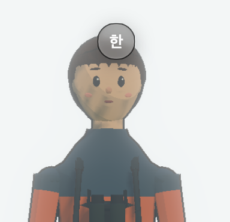
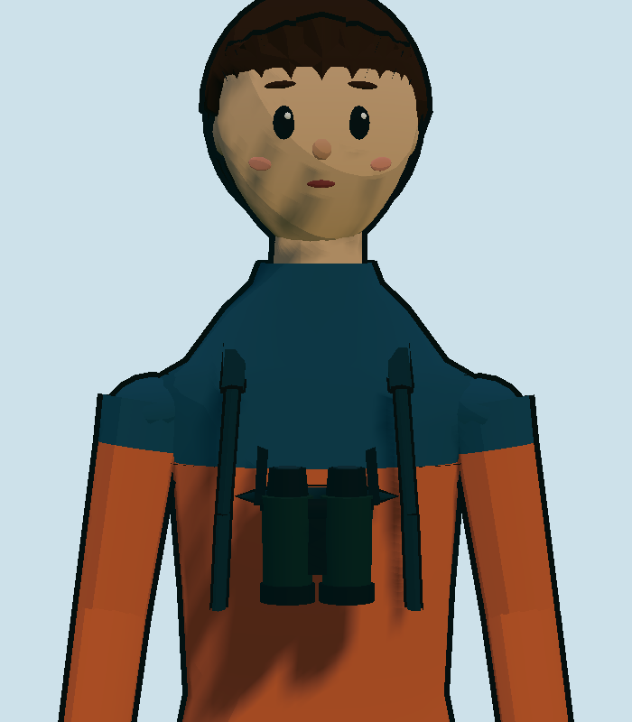
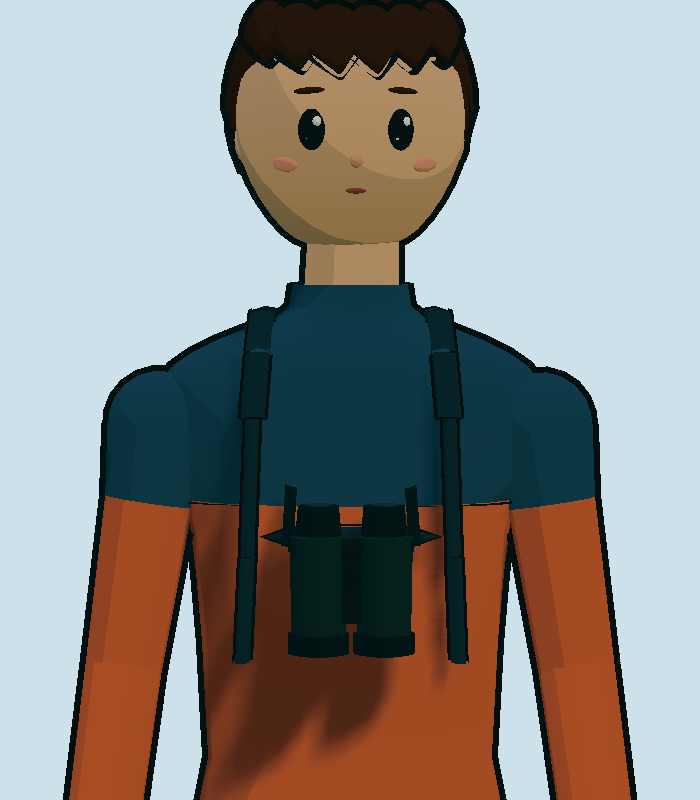
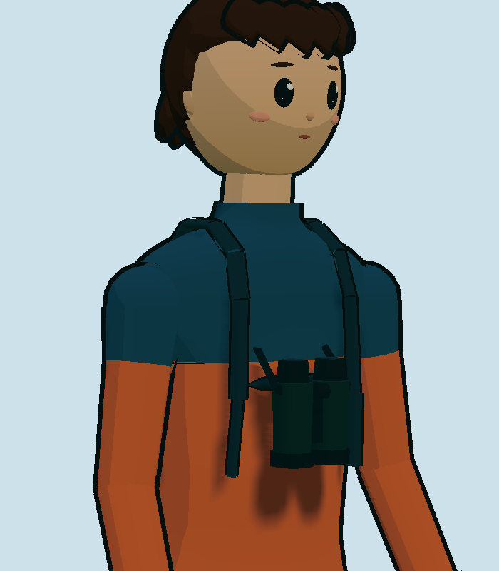
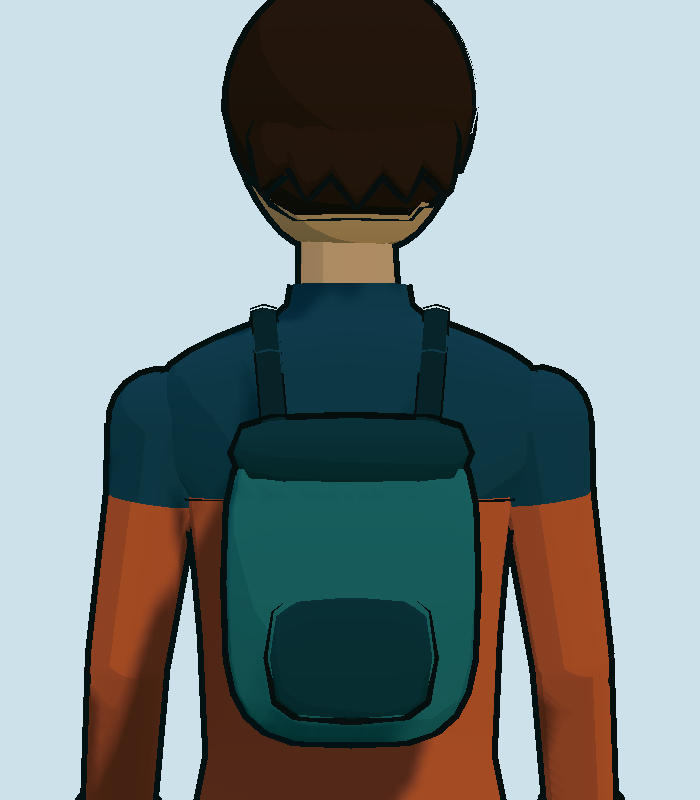
얼굴의 거뭇한 얼룩은 머리카락과 코가 드리운 거친 그림자였습니다. 그래서 얼굴과 머리는 그림자를 받지 않게 했습니다. 턱은 짧고 둥글게 줄이고, 코는 작은 점으로, 입은 짧은 선으로 바꿨습니다. 톱니 모양이던 앞머리는 한쪽으로 쓸린 다발로 바꿨고, 볼 위의 뾰족한 머리 경계는 없앴습니다.
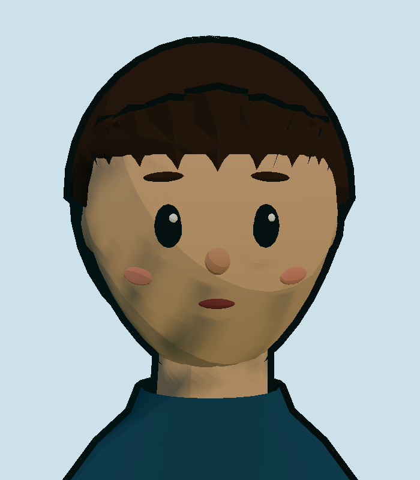
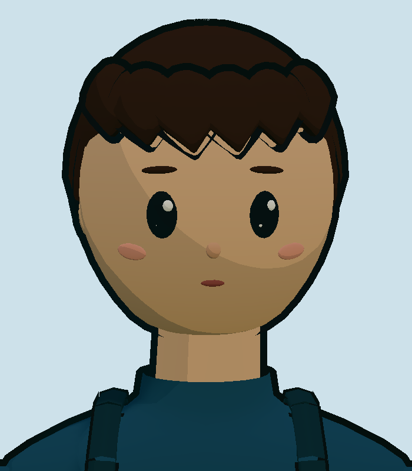
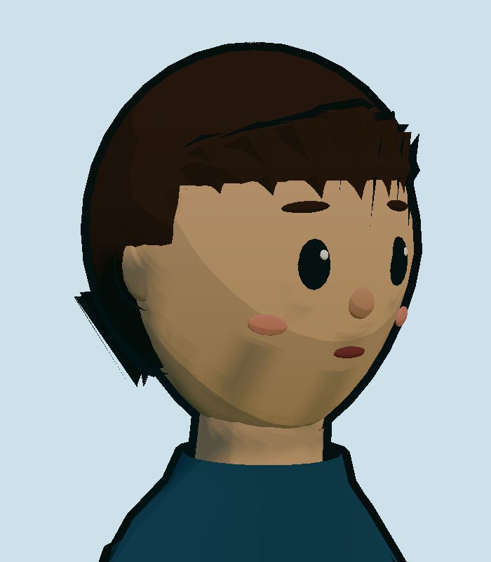
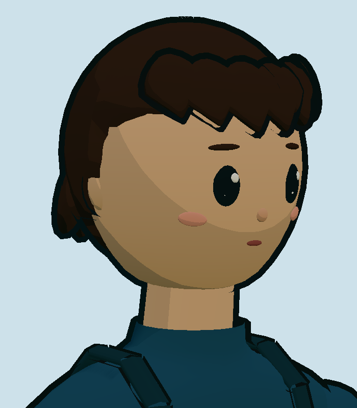
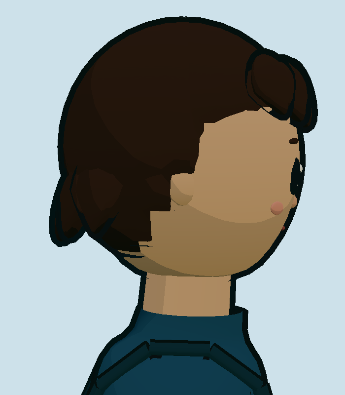
수정 전에는 무릎을 9cm 앞으로 굽히고 엉덩이를 뺀 채 팔만 들어 올려서 뒤로 젖혀 보였습니다. 수정 후에는 무릎을 거의 펴고 서며, 쌍안경을 대면 상체를 7° 앞으로 숙입니다.
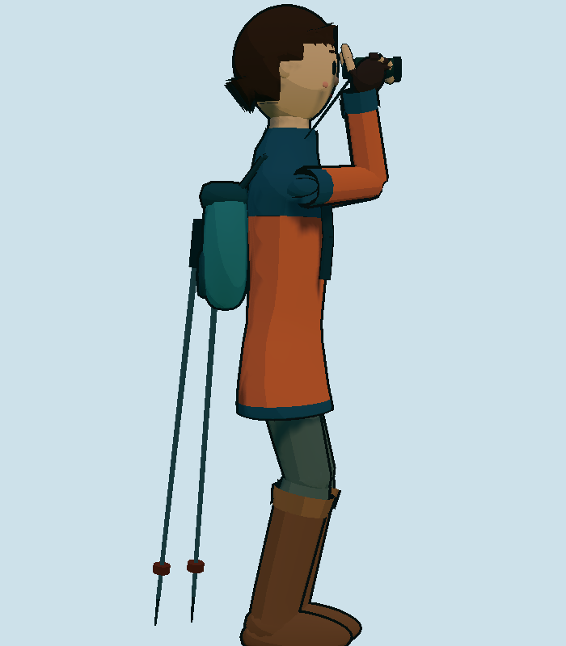
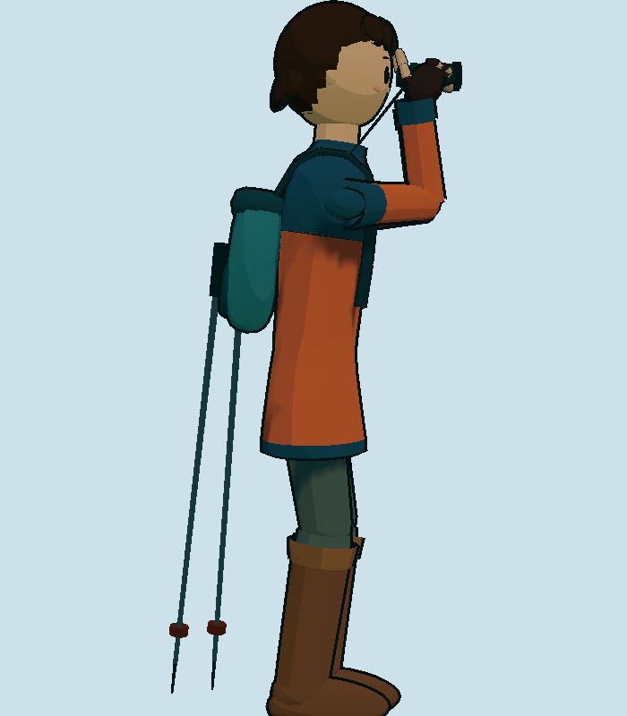
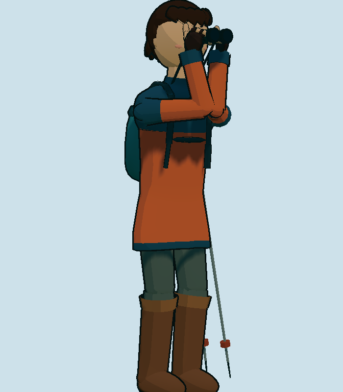
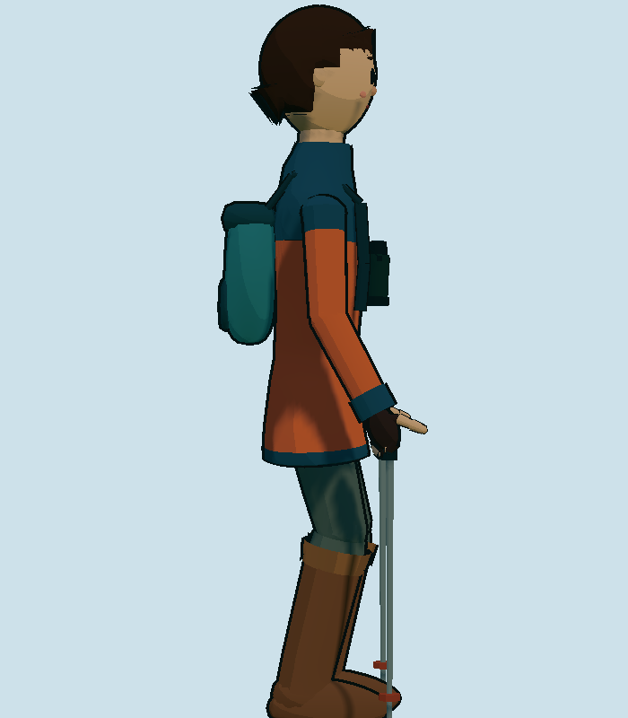
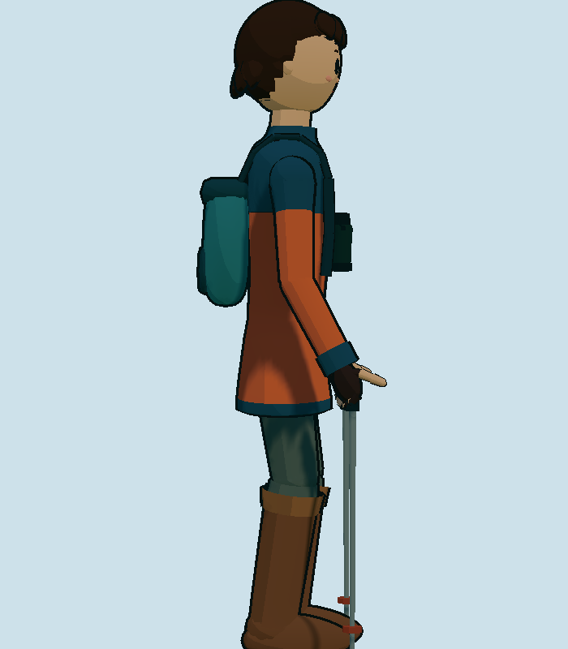
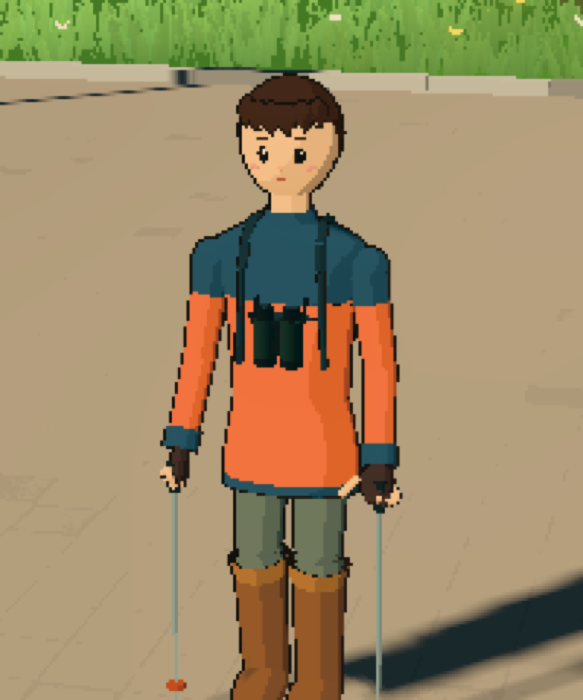
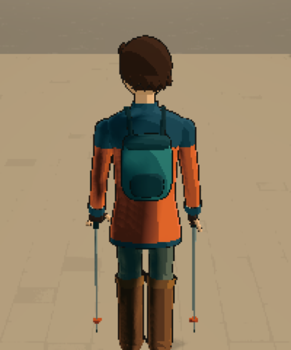
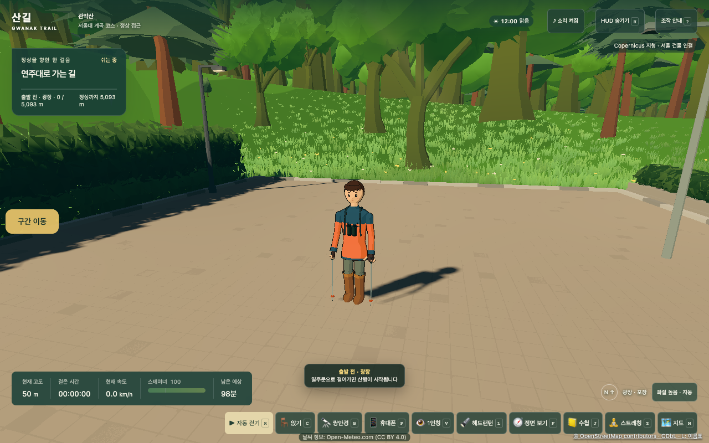